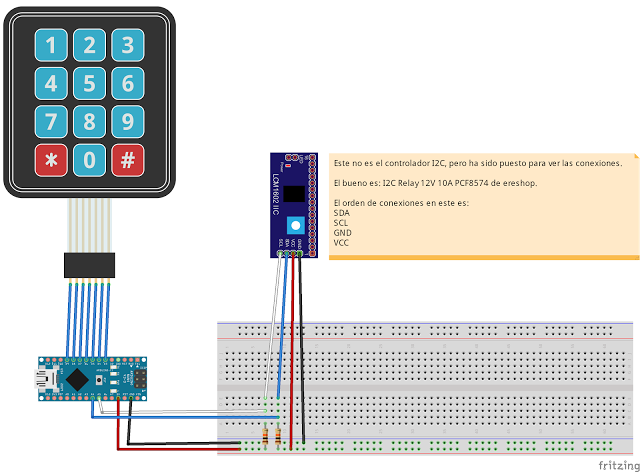
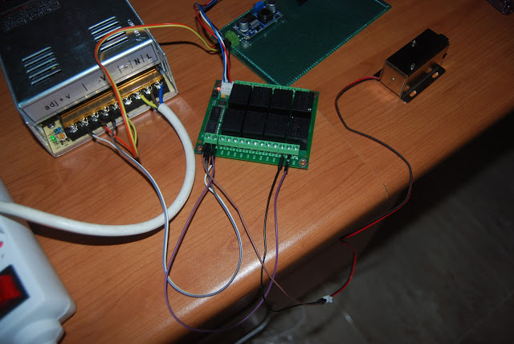

Sistema de apertura de un escaparate con arduino
Descripción
La finalidad del proyecto es crear un sistema selectivo de apertura de escaparates.
Los requerimientos son los siguientes:
- Hay un total de 8 escaparates.
- Se han de poder abrir cada uno de los 8 escaparates de forma independiente.
- Se han de poder abrir todos los escaparates a la vez.
- El tiempo durante el cual los cerrojos deben de estar abiertos es de 1 minuto.
- Hay 3 cerrojos por escaparate.
Instrucciones
Componentes usados
Los componentes usados han sido:
- Fuente de alimentación de 12V y 30A
- Arduino nano v 3.0 5v
- Reductor voltaje LM2596s
- Bloque relés I2C 12v 10A
- Teclado 4 x 3
- Placa PCB 9x15 mm
- 4-pin 2.00mm connector
- 4W 2.00mm 4F/4F 6"
- 2 resistencias de 10K
- Cerrojo
Montaje del circuito
El esquema en Fritzing es el siguiente:

Como puede observarse en las siguientes imágenes, el sistema ha sido montado sobre una placa pcb de 9x15. La fuente de alimentación se ha elegido de 30A porque cada uno de los cerrojos usa 900 mA y hay 24 de estos. El móldulo LM2596s ha sido usado para reducir el voltaje de entrada a el arduino de 12V a 6V.
Imágenes del sistema montado dentro del laboratorio:

Software
Para comprobar la dirección I2C del bloque de relés se ha usado el programa llamado Arduino I2c Scanner.
Las librerías usadas han sido:
- I2C_RL8xxM: librería usada para acceder al bloque de relés.
- Wire: librería usada para las conexiones I2C y dependencia de la librería I2C_RL8xxM.
- keypad: librería usada para la gestión del teclado 4x3.
El código del arduino es el siguiente:
#include <Wire.h>
#include <I2C_RL8xxM.h>
#include <Keypad.h>
/**
Filas y columnas del teclado
*/
const byte ROWS = 4;
const byte COLS = 3;
/**
@brief Asignación de pins de las patas
*/
byte rowPins[ROWS] = {9, 8, 7, 6};
byte colPins[COLS] = {5, 4, 3};
/**
@brief Define los simbolos de los botones del teclado
*/
char Keys[ROWS][COLS] =
{
{'1', '2', '3'},
{'4', '5', '6'},
{'7', '8', '9'},
{'*', '0', '#'}
};
/**
@brief Inicializa el teclado
*/
Keypad keypad = Keypad(makeKeymap(Keys), rowPins, colPins, ROWS, COLS);
char key;
//Tiempo restante de botones
int botones[8] = { 0, 0, 0, 0, 0, 0, 0, 0};
int estadoBotones[8] = {0, 0, 0, 0, 0, 0, 0, 0}; // 0 es desactivado y 1 es activado.
int segundosEspera = 60;
//Se declara una variable que almacenará el tiempo actual (real) transcurrido
//desde que se enciende la placa.
unsigned long tiempo = 0;
//Se declara una variable que almacenará el último valor de tiempo en el que se
//ejecutó la instrucción (delay).
unsigned long t_actualizado = 0;
//Se declara una variable que almacenará el tiempo que se desea que dure el delay.
unsigned long t_delay = 1000; // Por ser milisegundos, nos esperamos un segundo.
int DirReles = 32;
I2C_RL8xxM rb (DirReles);
int pinLed = 13;
void setup()
{
Serial.begin(9600); //Para debug
Serial.println("Inicio");
Wire.begin(); //Inicializa el I2C como master
keypad.addEventListener(keypadEvent); // Añade un gestor de eventos para el teclado
pinMode(13, OUTPUT);
}
void activaRele(int numRele)
{
Serial.print("Rele activado: ");
Serial.println(numRele);
if (estadoBotones[numRele - 1] == 0)
{
estadoBotones[numRele - 1] = 1;
botones[numRele - 1] = segundosEspera + 2;
rb.Switch (numRele, true);
}
Serial.println("Rele activado: FIN");
}
void apagaRele(int numRele)
{
Serial.print("Rele desactivado: ");
Serial.println(numRele);
if (estadoBotones[numRele - 1] == 1)
{
estadoBotones[numRele - 1] = 0;
rb.Switch (numRele, false);
}
Serial.println("Rele desactivado: FIN");
}
/**
Gestión de la tecla pulsada
*/
void keypadEvent(KeypadEvent key)
{
Serial.print("Tecla pulsada: ");
Serial.println(key);
switch (keypad.getState()) {
case PRESSED: //pulsado + soltado
Serial.println("PRESSED");
digitalWrite(13, HIGH);
if (key == '0')
{
activaRele(1);
activaRele(2);
activaRele(3);
activaRele(4);
activaRele(5);
activaRele(6);
activaRele(7);
activaRele(8);
} else if (key == '1')
{
activaRele(1);
} else if (key == '2')
{
activaRele(2);
} else if (key == '3')
{
activaRele(3);
} else if (key == '4')
{
activaRele(4);
} else if (key == '5')
{
activaRele(5);
} else if (key == '6')
{
activaRele(6);
} else if (key == '7')
{
activaRele(7);
} else if (key == '8')
{
activaRele(8);
} else if (key == '9')
{
} else if (key == '#')
{
} else if (key == '*')
{
}
break;
case RELEASED: //Soltado
Serial.println("RELEASED");
digitalWrite(13, LOW);
break;
case HOLD: //Mantenido el botón pulsado
Serial.println("HOLD");
break;
}
}
void testReles()
{
for (int i = 0; i < 8; i++)
{
if (botones[i] == 1)
{
apagaRele(i + 1);
}
if (botones[i] > 0)
{
botones[i]--;
}
}
//Serial.println("Comprobación estado relés");
}
//Se quita, si no el SoftTimer no funciona. Este lo tiene definido dentro.
void loop()
{
key = keypad.getKey();
/*
if (key) {
Serial.print("Tecla pulsada: ");
Serial.println(key);
}*/
//Se almacena el tiempo que ha transcurrido desde que se encendió el Arduino.
tiempo = millis();
//Si ese tiempo es mayor que el intervalo de deseado (equivalente al tiempo
//de delay) se actualiza el intervalo y se ejecutan las instruciones relacionadas.
//La idea detrás de este algoritmo consiste en pensar que si han transcurrido
//20ms y se desea un delay de 30ms cada vez, cuando se superen esos 30ms la
//variable con la que se compara pasa a ser 60ms. Una vez se alcanzan los 60ms
//pasa a ser 90ms y así sucesivamente.
if ( tiempo > t_actualizado + t_delay)
{
//Se actualiza el tiempo que ha de transcurrir para el próximo delay.
t_actualizado = tiempo;
testReles();
}
}